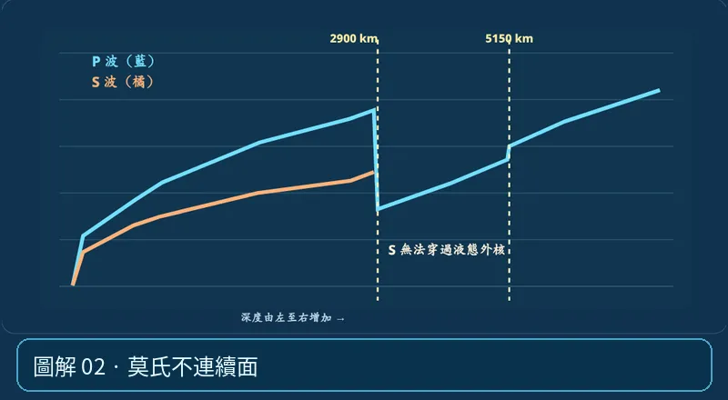

第 02 單元｜圖解 2/6｜課本 p.68–71
莫氏不連續面
地殼與地函交界：莫氏不連續面。P、S 波進入較快的上部地函時速度通常增加。它不是地殼與岩石圈的分界。
① 看一眼② 操作圖③ 自己推理④ 揭開解答
🔬 這張圖，請自己動手試
操作圖上方的頁籤、滑桿或按鈕；圖片也能左右滑動放大觀看。
互動圖解 · 莫氏不連續面

原創 SVG 地科教學模型，方便理解，非真實比例、非即時地震資料；互動無法載入時仍有靜態圖。
STEP 01 · 先觀察
👀 眼睛先找線索
切到波速曲線，注意地表附近的 P、S 波速如何改變；再切回成分分層確認分界的上下層。
💡 為什麼是這樣？
地殼與地函的主要分界是莫氏不連續面；地震波速在此通常增加。海洋地殼較薄，大陸地殼較厚，莫氏面深度不一。
🎯 換個問法想一題
「莫氏面是地殼與岩石圈的分界」對不對？
我想好了，點開看答案 ↓
不對。莫氏面分開地殼與地函，不是整個岩石圈底界。
⚡ 一句記住：第一條分界線